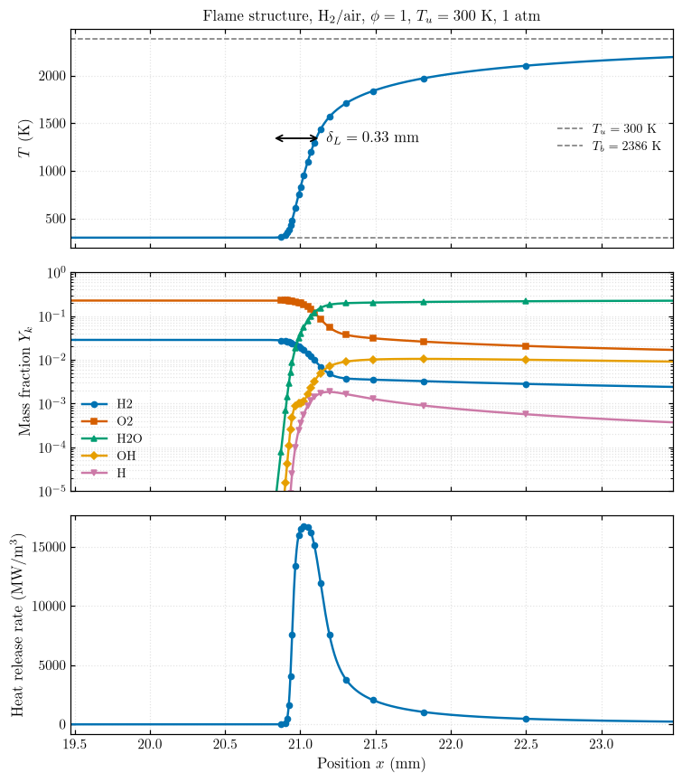
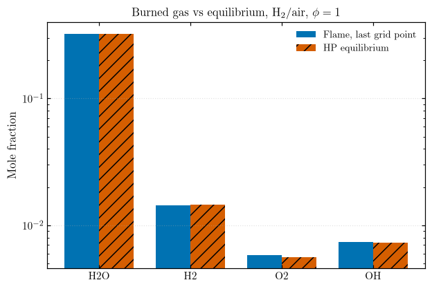
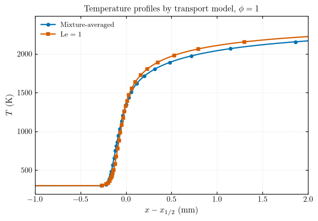
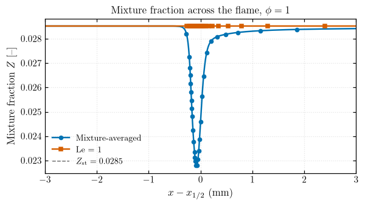
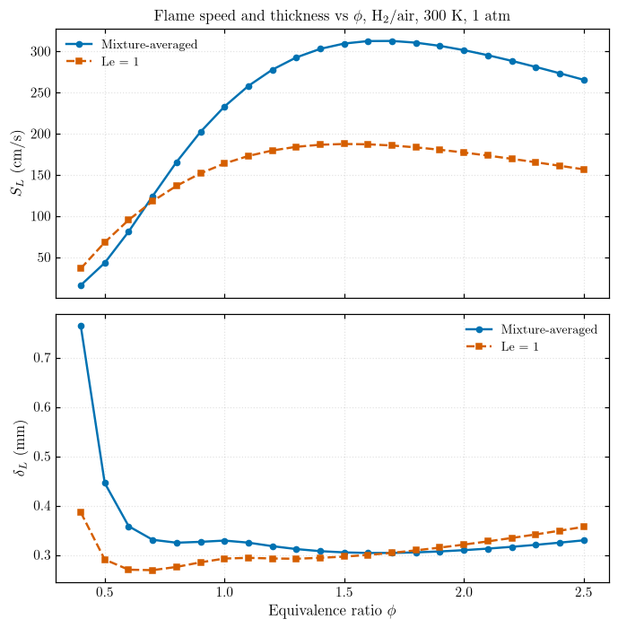
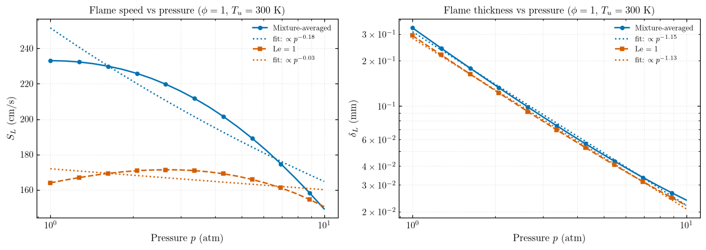
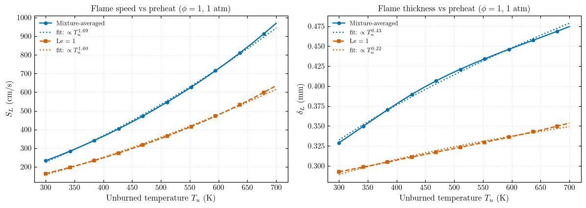
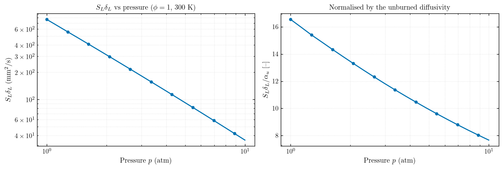

Part 3 — Premixed Flames¶
Freely propagating H\(_2\)/air flames (h2o2.yaml): structure, equilibrium check, transport models, \(S_L(\phi)\), \(\delta_L(\phi)\), and pressure/preheat effects.
Functions live in src/ct_utils/free_flame (flames), src/ct_utils/general (equilibrium, fits, saving) and src/ct_utils/plots. Tables go to results/part3/raw/, figures to results/part3/figures/{pdf,jpeg}/.
import sys
from pathlib import Path
sys.path.insert(0, str(Path.cwd().parent / "src"))
import cantera as ct
import matplotlib.pyplot as plt
import numpy as np
import pandas as pd
import ct_utils
from ct_utils import free_flame as ff
from ct_utils import general as eq
from ct_utils import plots
from ct_utils.opposed_premixed_flame import stoichiometric_mixture_fraction
ct_utils.set_part("part3") # outputs go to results/part3/
plots.set_style()
ATM = ct.one_atm # Pa
Task 1 — 1D Flame Structure¶
\(\phi = 1\), \(T_u = 300\) K, 1 atm, mixture-averaged transport.
ff.solve_free_flame(phi, T_u, p, transport, fuel, oxidizer, mechanism, width) solves a FreeFlame (refinement ratio=2, slope=0.005, curve=0.01, up to 10 000 points). Results are cached, so repeated calls with the same arguments reuse the solved flame.
ff.flame_speed(flame) returns \(S_L\) = flame.velocity[0] (m/s); ff.flame_thickness(flame) returns \(\delta_L\) (m):
| Symbol | Meaning | SI unit |
|---|---|---|
| \(\delta_L\) | Thermal flame thickness | m |
| \(T_u\), \(T_b\) | Unburned and burned temperature | K |
| \(x\) | Position | m |
| \(\alpha\) | Thermal diffusivity \(k/(\rho c_p)\) | m²/s |
| \(S_L\) | Laminar flame speed | m/s |
ff.flame_to_dataframe(flame) exports the profiles with to_pandas() plus \(x\), \(u\) and the heat release rate.
flame = ff.solve_free_flame(1.0)
eq.save_dataframe(ff.flame_to_dataframe(flame), "flame_phi1_mixavg")
x_mm = flame.grid * 1e3
T_u, T_b = flame.T[0], flame.T[-1]
S_L, delta_L = ff.flame_speed(flame), ff.flame_thickness(flame)
x_f = flame.grid[np.argmax(np.gradient(flame.T, flame.grid))] * 1e3 # steepest point, mm
species = ["H2", "O2", "H2O", "OH", "H"]
Y = [flame.Y[flame.gas.species_index(sp)] for sp in species]
hrr = flame.heat_release_rate / 1e6 # MW/m^3
i_hrr = np.argmax(flame.heat_release_rate)
peaks = {sp: x_mm[np.argmax(y)] for sp, y in zip(["OH", "H"], Y[3:])}
print(f"S_L = {S_L * 100:.1f} cm/s, delta_L = {delta_L * 1e3:.3f} mm, domain = {x_mm[-1]:.0f} mm "
f"(delta_L / domain = {delta_L / flame.grid[-1] * 100:.2f} %)")
print(f"HRR peak at x = {x_mm[i_hrr]:.2f} mm where T = {flame.T[i_hrr]:.0f} K; T keeps rising to {T_b:.0f} K at the outlet")
print(f"Peaks: H at {peaks['H']:.2f} mm, OH at {peaks['OH']:.2f} mm (offset {peaks['OH'] - peaks['H']:.2f} mm)")
S_L = 233.1 cm/s, delta_L = 0.329 mm, domain = 60 mm (delta_L / domain = 0.55 %)
HRR peak at x = 21.03 mm where T = 997 K; T keeps rising to 2386 K at the outlet
Peaks: H at 21.19 mm, OH at 21.80 mm (offset 0.61 mm)
fig, axes = plt.subplots(3, 1, figsize=(7, 8), sharex=True)
plots.plot(x_mm, flame.T, "", r"$T$ (K)", ax=axes[0], markevery=60, legend=True,
hlines={T_u: rf"$T_u = {T_u:.0f}$ K", T_b: rf"$T_b = {T_b:.0f}$ K"},
title=r"Flame structure, H$_2$/air, $\phi = 1$, $T_u = 300$ K, 1 atm")
T_mid = 0.5 * (T_u + T_b)
axes[0].annotate("", xy=(x_f - delta_L * 500, T_mid), xytext=(x_f + delta_L * 500, T_mid),
arrowprops=dict(arrowstyle="<->", lw=1.2))
axes[0].text(x_f + delta_L * 600, T_mid, rf"$\delta_L = {delta_L * 1e3:.2f}$ mm", va="center")
plots.plot(x_mm, Y, "", "Mass fraction $Y_k$", ax=axes[1], yscale="log", markevery=60,
labels=[rf"$\mathrm{{{sp}}}$" for sp in species])
axes[1].set_ylim(1e-5, 1)
plots.plot(x_mm, hrr, "Position $x$ (mm)", "Heat release rate (MW/m$^3$)", ax=axes[2],
markevery=60, legend=False)
axes[2].set_xlim(x_f - 1.5, x_f + 2.5)
fig.tight_layout()
plots.save_figure(fig, "part3_flame_structure")
plt.show()

Answers¶
- HRR vs T peak: heat release peaks at \(x \approx 21.03\) mm where \(T \approx 1000\) K, early in the flame. \(T\) has no interior peak: it keeps rising to \(T_b\) at the outlet. Chain branching (\(\mathrm{H + O_2 \rightarrow OH + O}\)) and fast exothermic steps peak in the reaction zone. Further downstream, slow three-body radical recombination keeps releasing heat over several mm, so the temperature lags the heat release.
- OH and H: not co-located. H peaks at 21.19 mm, inside the reaction zone where it is produced; OH peaks 0.6 mm later at 21.80 mm, because it is removed only by slow recombination and persists into the post-flame gas.
- Thickness vs domain: \(\delta_L = 0.33\) mm is only 0.55 % of the domain (the solver widened it from 3 to 6 cm), so the flame is very well contained.
Task 2 — Equilibrium Composition Check¶
The reference is the HP equilibrium of the same mixture, from eq.equilibrium_state(phi) (Part 1), not flame.T[-1]. The flame's last grid point is compared against it.
gas_eq = eq.equilibrium_state(1.0)
T_err = abs(T_b - gas_eq.T) / gas_eq.T * 100
print(f"T_eq = {gas_eq.T:.1f} K, T_b = {T_b:.1f} K, error = {T_err:.2f} %")
assert T_err < 1.0, "tighten the refinement criteria"
species_eq = ["H2O", "H2", "O2", "OH"]
idx = [gas_eq.species_index(sp) for sp in species_eq]
comparison = pd.DataFrame({"species": species_eq, "X_flame": flame.X[idx, -1], "X_eq": gas_eq.X[idx]})
comparison["rel_diff_%"] = (comparison.X_flame - comparison.X_eq).abs() / comparison.X_eq * 100
eq.save_dataframe(comparison, "equilibrium_check")
print(comparison.to_string(index=False, float_format="%.4g"))
T_eq = 2387.6 K, T_b = 2386.1 K, error = 0.06 %
species X_flame X_eq rel_diff_%
H2O 0.324 0.3244 0.1012
H2 0.0143 0.01457 1.819
O2 0.005841 0.005609 4.129
OH 0.007355 0.007285 0.9655
pos, w = np.arange(len(species_eq)), 0.38
fig, ax = plt.subplots(figsize=(6.4, 4.2))
ax.bar(pos - w / 2, comparison.X_flame, w, color=plots.PALETTE[0], label="Flame, last grid point")
ax.bar(pos + w / 2, comparison.X_eq, w, color=plots.PALETTE[1], hatch="//", label="HP equilibrium")
ax.set(xticks=pos, xticklabels=[rf"$\mathrm{{{sp}}}$" for sp in species_eq], yscale="log",
ylabel="Mole fraction", title=r"Burned gas vs equilibrium, H$_2$/air, $\phi = 1$")
ax.grid(axis="y")
ax.legend()
plots.save_figure(fig, "part3_equilibrium_check")
plt.show()

The flame's burned gas matches equilibrium: \(T_b\) is within 0.06 % and every species within about 4 % (O\(_2\) is the largest gap, where recombination is still finishing at the outlet). The refinement is adequate.
Task 3 — Transport Model Comparison¶
\(\phi = 1\), 300 K, 1 atm, "mixture-averaged" vs "unity-Lewis-number".
ff.flame_position(flame) returns the position where \(T = T_u + (T_b - T_u)/2\), used to align the fronts at \(x = 0\).
flames = {"Mixture-averaged": flame,
"Le = 1": ff.solve_free_flame(1.0, transport="unity-Lewis-number")}
eq.save_dataframe(ff.flame_to_dataframe(flames["Le = 1"]), "flame_phi1_unityLe")
for name, f in flames.items():
print(f"{name:<17} S_L = {ff.flame_speed(f) * 100:6.1f} cm/s delta_L = {ff.flame_thickness(f) * 1e3:.3f} mm")
x_shift = [(f.grid - ff.flame_position(f)) * 1e3 for f in flames.values()]
Mixture-averaged S_L = 233.1 cm/s delta_L = 0.329 mm
Le = 1 S_L = 163.9 cm/s delta_L = 0.293 mm
fig, ax = plots.plot(x_shift, [f.T for f in flames.values()], r"$x - x_{1/2}$ (mm)", r"$T$ (K)",
labels=list(flames), markevery=40,
title=r"Temperature profiles by transport model, $\phi = 1$")
ax.set_xlim(-1, 2)
plots.save_figure(fig, "part3_T_profiles")
plt.show()

ff.mixture_fraction(flame, fuel, oxidizer) gives \(Z(x)\). The page's flame.mixture_fraction("H2", ...) does not exist for FreeFlame (only for counterflow flames), so \(Z\) is evaluated per grid point with a gas object. \(Z_\mathrm{st}\) comes from stoichiometric_mixture_fraction() (Part 2).
Z_st = stoichiometric_mixture_fraction()
Z = {name: ff.mixture_fraction(f) for name, f in flames.items()}
for name, z in Z.items():
print(f"{name:<17} Z: min {z.min():.4f} max {z.max():.4f} (variation {(z.max() - z.min()) / Z_st * 100:.1f} % of Z_st)")
Mixture-averaged Z: min 0.0228 max 0.0285 (variation 20.1 % of Z_st)
Le = 1 Z: min 0.0285 max 0.0285 (variation 0.0 % of Z_st)
fig, ax = plots.plot(x_shift, list(Z.values()), r"$x - x_{1/2}$ (mm)", r"Mixture fraction $Z$ [--]",
figsize=(6, 3), labels=list(flames), markevery=40,
hlines={Z_st: rf"$Z_\mathrm{{st}} = {Z_st:.4f}$"},
title=r"Mixture fraction across the flame, $\phi = 1$")
ax.set_xlim(-3, 3)
plots.save_figure(fig, "part3_Z_profiles")
plt.show()

Answers¶
- Higher \(S_L\) at \(\phi = 1\): mixture-averaged (233 vs 164 cm/s). The light species H\(_2\) and H diffuse much faster than heat (\(Le_{\mathrm{H_2}} \approx 0.3\), \(Le_\mathrm{H} \approx 0.2\)). Forcing \(D_k = \alpha\) slows the H atoms that diffuse upstream to start chain branching in the preheat zone, so the Le = 1 flame is slower.
- Non-conserved \(Z\): \(Z\) is built from element mass fractions, so it is conserved only if all species diffuse at the same rate. Element conservation in a steady 1D flame gives
| Symbol | Meaning | SI unit |
|---|---|---|
| \(\rho u\) | Mass flux through the flame (constant) | kg/(m²·s) |
| \(Z_\mathrm{H}\) | Mass fraction of element H | – |
| \(J_\mathrm{H}\) | Diffusive mass flux of element H (sum over species) | kg/(m²·s) |
Wherever H-carrying species diffuse faster than the rest, \(J_\mathrm{H} \ne 0\) and \(Z\) departs from its inlet value. In this run \(Z\) does not rise in the preheat zone, as the page expects; it dips by 20 % (0.0285 → 0.0228) at the reaction zone. H\(_2\) diffuses downstream into the reaction zone, down its steep gradient (\(J_\mathrm{H} > 0\)), so less hydrogen is carried by convection there. No "extra" hydrogen accumulates; it is moved ahead by diffusion and consumed. Under Le = 1 all species diffuse together and \(Z\) stays at \(Z_\mathrm{st}\) to machine precision. - Methane: much weaker. \(Le_{\mathrm{CH_4}} \approx 0.97\), so CH\(_4\) diffuses almost exactly like heat and \(Z\) would stay nearly constant (small deviations come only from the H and H\(_2\) intermediates).
Task 4 — \(S_L(\phi)\) and \(\delta_L(\phi)\)¶
ff.flame_speed_sweep(phi_range, ...) and ff.flame_thickness_sweep(phi_range, ...) loop solve_free_flame over \(\phi\) and return arrays in m/s and m. Thanks to the cache, the second sweep reuses the flames of the first.
phi = np.round(np.arange(0.4, 2.51, 0.1), 2)
models = {"Mixture-averaged": "mixture-averaged", "Le = 1": "unity-Lewis-number"}
S_L_phi = {name: ff.flame_speed_sweep(phi, transport=tm) for name, tm in models.items()}
d_L_phi = {name: ff.flame_thickness_sweep(phi, transport=tm) for name, tm in models.items()}
sweep = pd.DataFrame({"phi": phi,
**{f"S_L {n} (m/s)": v for n, v in S_L_phi.items()},
**{f"delta_L {n} (m)": v for n, v in d_L_phi.items()}})
eq.save_dataframe(sweep, "S_L_delta_L_vs_phi")
ma = "Mixture-averaged"
print(f"S_L peak (mixture-averaged): {S_L_phi[ma].max() * 100:.1f} cm/s at phi = {phi[np.argmax(S_L_phi[ma])]:.1f}")
print(f"Models cross at phi ~ {eq.crossings(phi, S_L_phi[ma] - S_L_phi['Le = 1'], 0.0).round(2)}")
SLd = S_L_phi[ma] * d_L_phi[ma]
print(f"S_L * delta_L (mixture-averaged): {SLd.min() * 1e6:.0f} to {SLd.max() * 1e6:.0f} mm^2/s over phi = 0.4-2.5")
print(sweep.iloc[::3].to_string(index=False, float_format="%.4g"))
S_L peak (mixture-averaged): 312.8 cm/s at phi = 1.7
Models cross at phi ~ [0.67]
S_L * delta_L (mixture-averaged): 124 to 951 mm^2/s over phi = 0.4-2.5
phi S_L Mixture-averaged (m/s) S_L Le = 1 (m/s) delta_L Mixture-averaged (m) delta_L Le = 1 (m)
0.4 0.1617 0.3647 0.0007641 0.0003862
0.7 1.243 1.182 0.0003306 0.0002691
1 2.331 1.639 0.000329 0.0002926
1.3 2.927 1.842 0.0003118 0.0002922
1.6 3.126 1.872 0.0003039 0.0002999
1.9 3.068 1.806 0.000307 0.0003148
2.2 2.886 1.696 0.0003163 0.0003343
2.5 2.656 1.568 0.0003295 0.0003568
fig, (ax1, ax2) = plt.subplots(2, 1, figsize=(6.4, 6.5), sharex=True)
for (name, s), ls in zip(S_L_phi.items(), ["-", "--"]):
ax1.plot(phi, s * 100, ls=ls, label=name)
for (name, d), ls in zip(d_L_phi.items(), ["-", "--"]):
ax2.plot(phi, d * 1e3, ls=ls, label=name)
ax1.set(ylabel=r"$S_L$ (cm/s)", title=r"Flame speed and thickness vs $\phi$, H$_2$/air, 300 K, 1 atm")
ax2.set(xlabel=r"Equivalence ratio $\phi$", ylabel=r"$\delta_L$ (mm)")
for ax in (ax1, ax2):
ax.grid(True)
ax.legend()
fig.tight_layout()
plots.save_figure(fig, "part3_SL_deltaL_vs_phi")
plt.show()

Answers¶
- \(S_L\) peak: 313 cm/s at \(\phi \approx 1.7\) (mixture-averaged), far richer than the \(T_\mathrm{ad}\) peak (\(\phi \approx 1.06\), Part 1). Rich H\(_2\) mixtures contain more of the fast-diffusing fuel and the H radical pool, which increases reactivity and diffusivity even though the flame is cooler.
- The gap between the models: not quite as the page states. The curves cross at \(\phi \approx 0.67\). Below that, Le = 1 is faster (36 vs 16 cm/s at \(\phi = 0.4\), a factor 2.3, the largest relative gap). Above it, mixture-averaged is faster, with the largest absolute gap on the rich side (\(\approx 126\) cm/s at \(\phi = 1.6\)–1.7). Lewis-number argument: the unity-Lewis model makes H\(_2\) and H diffuse slower but heavy O\(_2\) and H\(_2\)O faster. On the rich side the light-species slowdown dominates; very lean, the deficient reactant is still H\(_2\), but the faster heat and O\(_2\) transport of the Le = 1 model wins. Planar flames are unstretched, so the thermodiffusive enhancement of lean H\(_2\) (cellular flames) does not show up here.
- \(\delta_L\) vs \(S_L\): inversely related. The thin flames are the fast ones (\(\delta_L \sim \alpha/S_L\)), and \(\delta_L\) grows steeply on the lean side where \(S_L\) collapses. But \(S_L\delta_L\) varies a lot with \(\phi\) (124 to 951 mm²/s), because the relevant diffusivity changes with the burned temperature and composition.
Task 5 — Pressure and Preheat¶
\(\phi = 1\), both transport models (the page asks for mixture-averaged; Le = 1 is kept for comparison). \(p \in [1, 10]\) atm and \(T_u \in [300, 700]\) K, 20 points each.
eq.power_law_fit(x, y) fits \(y = C x^n\) as a straight line on log–log axes and returns (C, n); the fits are drawn dotted.
5a — Pressure sweep¶
phi = 1.0
p_atm = np.geomspace(1, 10, 20) # atm
S_L_p = {name: np.empty_like(p_atm) for name in models}
d_L_p = {name: np.empty_like(p_atm) for name in models}
for name, tm in models.items():
for i, p in enumerate(p_atm):
flame_p = ff.solve_free_flame(phi, p=p * ATM, transport=tm)
S_L_p[name][i] = ff.flame_speed(flame_p)
d_L_p[name][i] = ff.flame_thickness(flame_p)
fit_S_p = {name: eq.power_law_fit(p_atm, S_L_p[name]) for name in models}
fit_d_p = {name: eq.power_law_fit(p_atm, d_L_p[name]) for name in models}
eq.save_dataframe(pd.DataFrame({"p_atm": p_atm,
**{f"S_L {n} (m/s)": v for n, v in S_L_p.items()},
**{f"delta_L {n} (m)": v for n, v in d_L_p.items()}}), "pressure_sweep")
for name in models:
(C_S, n_S), (C_d, n_d) = fit_S_p[name], fit_d_p[name]
print(f"{name:<17} S_L = {C_S:.3f} p^{n_S:.3f} m/s delta_L = {C_d:.3e} p^{n_d:.3f} m (p in atm)")
Mixture-averaged S_L = 2.516 p^-0.184 m/s delta_L = 3.104e-04 p^-1.150 m (p in atm)
Le = 1 S_L = 1.719 p^-0.031 m/s delta_L = 2.813e-04 p^-1.131 m (p in atm)
fig, axes = plt.subplots(1, 2, figsize=(11, 4))
for (name, color), ls in zip(zip(models, plots.PALETTE), ["-", "--"]):
C, n = fit_S_p[name]
axes[0].plot(p_atm, S_L_p[name] * 100, ls=ls, color=color, markevery=2, label=name)
axes[0].plot(p_atm, C * p_atm**n * 100, ":", color=color, marker="none", label=rf"fit: $\propto p^{{{n:.2f}}}$")
C, n = fit_d_p[name]
axes[1].plot(p_atm, d_L_p[name] * 1e3, ls=ls, color=color, markevery=2, label=name)
axes[1].plot(p_atm, C * p_atm**n * 1e3, ":", color=color, marker="none", label=rf"fit: $\propto p^{{{n:.2f}}}$")
axes[0].set(xscale="log", xlabel=r"Pressure $p$ (atm)", ylabel=r"$S_L$ (cm/s)",
title=r"Flame speed vs pressure ($\phi = 1$, $T_u = 300$ K)")
axes[1].set(xscale="log", yscale="log", xlabel=r"Pressure $p$ (atm)", ylabel=r"$\delta_L$ (mm)",
title=r"Flame thickness vs pressure ($\phi = 1$, $T_u = 300$ K)")
for ax in axes:
ax.grid(True, which="both")
ax.legend(fontsize=8)
fig.tight_layout()
plots.save_figure(fig, "part3_pressure_sweep")
plt.show()

5b — Preheat sweep¶
T_u_range = np.linspace(300, 700, 20) # K
S_L_T = {name: np.empty_like(T_u_range) for name in models}
d_L_T = {name: np.empty_like(T_u_range) for name in models}
for name, tm in models.items():
for i, T in enumerate(T_u_range):
flame_T = ff.solve_free_flame(phi, T_u=T, transport=tm)
S_L_T[name][i] = ff.flame_speed(flame_T)
d_L_T[name][i] = ff.flame_thickness(flame_T)
fit_S_T = {name: eq.power_law_fit(T_u_range, S_L_T[name]) for name in models}
fit_d_T = {name: eq.power_law_fit(T_u_range, d_L_T[name]) for name in models}
eq.save_dataframe(pd.DataFrame({"T_u": T_u_range,
**{f"S_L {n} (m/s)": v for n, v in S_L_T.items()},
**{f"delta_L {n} (m)": v for n, v in d_L_T.items()}}), "preheat_sweep")
for name in models:
print(f"{name:<17} S_L ~ T_u^{fit_S_T[name][1]:.3f} delta_L ~ T_u^{fit_d_T[name][1]:.3f}")
Mixture-averaged S_L ~ T_u^1.687 delta_L ~ T_u^0.430
Le = 1 S_L ~ T_u^1.601 delta_L ~ T_u^0.223
fig, axes = plt.subplots(1, 2, figsize=(11, 4))
for (name, color), ls in zip(zip(models, plots.PALETTE), ["-", "--"]):
C, m = fit_S_T[name]
axes[0].plot(T_u_range, S_L_T[name] * 100, ls=ls, color=color, markevery=2, label=name)
axes[0].plot(T_u_range, C * T_u_range**m * 100, ":", color=color, marker="none", label=rf"fit: $\propto T_u^{{{m:.2f}}}$")
C, m = fit_d_T[name]
axes[1].plot(T_u_range, d_L_T[name] * 1e3, ls=ls, color=color, markevery=2, label=name)
axes[1].plot(T_u_range, C * T_u_range**m * 1e3, ":", color=color, marker="none", label=rf"fit: $\propto T_u^{{{m:.2f}}}$")
axes[0].set(xlabel=r"Unburned temperature $T_u$ (K)", ylabel=r"$S_L$ (cm/s)",
title=r"Flame speed vs preheat ($\phi = 1$, 1 atm)")
axes[1].set(xlabel=r"Unburned temperature $T_u$ (K)", ylabel=r"$\delta_L$ (mm)",
title=r"Flame thickness vs preheat ($\phi = 1$, 1 atm)")
for ax in axes:
ax.grid(True)
ax.legend(fontsize=8)
fig.tight_layout()
plots.save_figure(fig, "part3_preheat_sweep")
plt.show()

5c — \(S_L\delta_L\) and preheat vs pressure¶
\(S_L\delta_L\) is shown raw and divided by the unburned thermal diffusivity \(\alpha_u = k/(\rho c_p)\) at the inlet (mixture-averaged).
ma = "Mixture-averaged"
flames_p = [ff.solve_free_flame(phi, p=p * ATM) for p in p_atm]
alpha_u = np.array([f.thermal_conductivity[0] / (f.density[0] * f.cp_mass[0]) for f in flames_p]) # m^2/s
SLd_p = S_L_p[ma] * d_L_p[ma] # m^2/s
S_L_ref = ff.flame_speed(ff.solve_free_flame(phi))
S_L_500K = ff.flame_speed(ff.solve_free_flame(phi, T_u=500.0))
S_L_2atm = ff.flame_speed(ff.solve_free_flame(phi, p=2 * ATM))
print(f"S_L: 300 K, 1 atm = {S_L_ref * 100:.1f} cm/s | +200 K preheat = {S_L_500K * 100:.1f} cm/s "
f"({(S_L_500K / S_L_ref - 1) * 100:+.0f} %) | 2 atm = {S_L_2atm * 100:.1f} cm/s ({(S_L_2atm / S_L_ref - 1) * 100:+.0f} %)")
print(f"S_L*delta_L: {SLd_p[0] * 1e6:.0f} -> {SLd_p[-1] * 1e6:.0f} mm^2/s from 1 to 10 atm; "
f"S_L*delta_L/alpha_u: {(SLd_p / alpha_u).min():.1f} to {(SLd_p / alpha_u).max():.1f}")
S_L: 300 K, 1 atm = 233.1 cm/s | +200 K preheat = 527.3 cm/s (+126 %) | 2 atm = 226.5 cm/s (-3 %)
S_L*delta_L: 767 -> 36 mm^2/s from 1 to 10 atm; S_L*delta_L/alpha_u: 7.7 to 16.5
fig, axes = plt.subplots(1, 2, figsize=(11, 3.8))
plots.plot(p_atm, SLd_p * 1e6, r"Pressure $p$ (atm)", r"$S_L \delta_L$ (mm$^2$/s)", ax=axes[0],
xscale="log", yscale="log", legend=False, markevery=2,
title=r"$S_L \delta_L$ vs pressure ($\phi = 1$, 300 K)")
plots.plot(p_atm, SLd_p / alpha_u, r"Pressure $p$ (atm)", r"$S_L \delta_L / \alpha_u$ [--]", ax=axes[1],
xscale="log", legend=False, markevery=2, title=r"Normalised by the unburned diffusivity")
fig.tight_layout()
plots.save_figure(fig, "part3_SLdelta_vs_p")
plt.show()

Answers¶
- Exponents (mixture-averaged): \(S_L \propto p^{-0.18}\), not the \(\approx -0.5\) the page expects. \(S_L(p)\) is not a power law: its local slope steepens from \(\approx 0\) at 1 atm to \(\approx -0.5\) at 10 atm, which the dotted fit cannot follow. Under Le = 1, \(S_L\) even rises slightly up to \(\approx 3\) atm before falling (\(n = -0.03\)). Thickness is a clean power law for both models: \(\delta_L \propto p^{-1.15}\) and \(p^{-1.13}\). Preheat gives \(S_L \propto T_u^{1.69}\) (Le = 1: \(T_u^{1.60}\)), inside the typical 1.5–2.0, so H\(_2\) follows the usual trend; \(\delta_L \propto T_u^{0.43}\).
- Why \(S_L\) falls with \(p\) and \(\delta_L\) falls faster: \(S_L \sim \sqrt{\alpha\,\omega}\) with \(\alpha \propto 1/p\). If the overall rate scaled as \(\omega \propto p\), \(S_L\) would not change; it falls because the three-body step \(\mathrm{H + O_2 + M \rightarrow HO_2 + M}\) strengthens with pressure and competes with chain branching. Meanwhile \(\delta_L \sim \alpha / S_L\) carries the full \(1/p\) of \(\alpha\), so it falls almost as \(p^{-1}\).
- Preheat vs pressure: +200 K preheat raises \(S_L\) from 233 to 527 cm/s (+126 %); doubling \(p\) to 2 atm lowers it to 227 cm/s (−3 %). Preheat is by far the stronger lever, which is why high-inlet-temperature and recuperated combustors face flashback risk with H\(_2\), and why high pressure alone does not slow a flame much.
- \(S_L \delta_L\): it has units of diffusivity and approximates the thermal diffusivity \(\alpha\), since \(\delta_L \sim \alpha/S_L\). It is not constant with pressure here: it drops from 767 to 36 mm²/s between 1 and 10 atm, because \(\alpha \propto 1/p\). Normalising by the unburned \(\alpha_u\) removes most of that: \(S_L\delta_L/\alpha_u\) only varies from about 8 to 17. It stays above 1 because \(\delta_L\) is set by the hot gas, where \(\alpha\) is much larger than at 300 K.